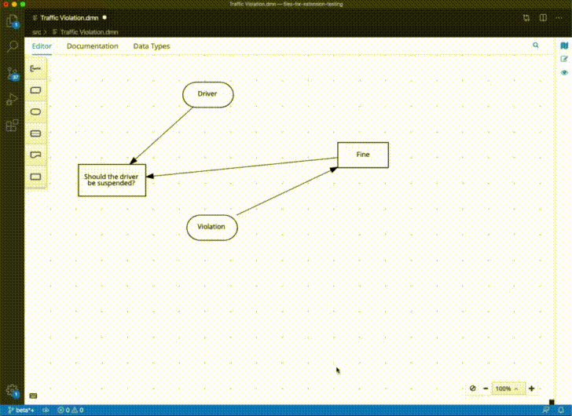
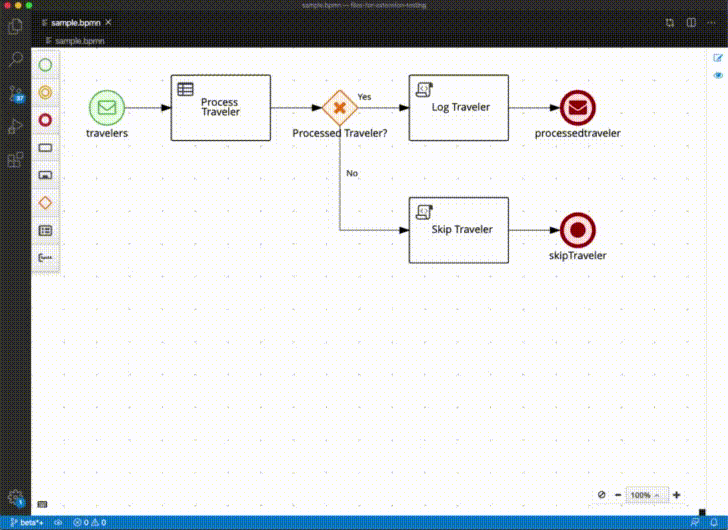

Enhanced Keyboard Shortcuts on Kogito Tooling
Today we merged our new Keyboard Shortcuts API. It gives editors the power to add custom reusable keyboard shortcuts that work in all channels! For the existing editors — BPMN, DMN and SceSim — we maintained the same mapping, but we did some under-the-hood enhancements that will make the experience even better.
The coolest feature we added was the Keyboard Shortcuts Panel. Clicking on the little keyboard icon on the bottom-left corner will open the panel with detailed information about the available shortcuts. Also, you can open this panel by pressing Shift + / .

Also, for macOS, shortcuts that used the Ctrl key were mapped to use the Cmd key. That means you can copy/paste using Cmd + C and Cmd + V now, just like you’re used on other macOS apps.
Last but not least, the new method for registering keyboard shortcuts also improved the responsiveness of actions. When using a keyboard shortcut to execute an action, you should feel that they run much more instantly now. To test that, try the cool “Preview” feature by holding Ctrl + Alt (Cmd + Alt on macOS) and selecting an area of the diagram.

The new API for registering keyboard shortcuts is available through the global window.envelope.keyboardShortcuts object and you can check out its details on the API definition interface.
Stay tuned for more updates like this one! As always, if you encounter a problem or want to suggest enhancements, please use the GitHub issues directly on the GitHub repository or in JIRA.